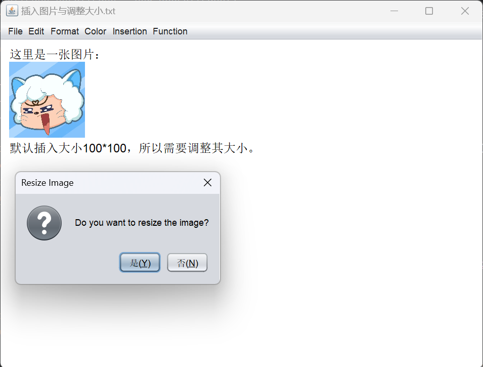
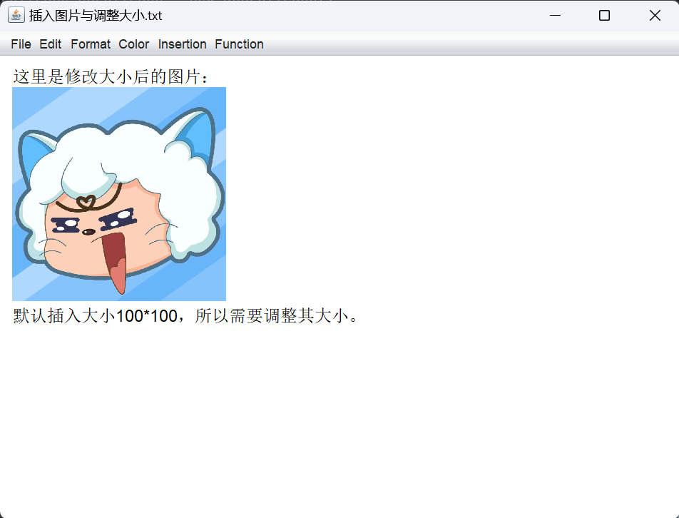

图片插入
图片插入的流程就是弹出菜单栏，选择图片并插入。菜单栏设计和打开文件功能的部分类似，直接调用FileDialog的LOAD方法，此处不加赘述。
第一版代码的实现是直接使用java内置的方法JTextPane.insertIcon(new ImageIcon(“imgPath”))，直接插入原图，不过这样实现图片插入不能根据用户需求调整图片大小。 第二版代码，为了实现图片大小的调整，设计过不同思路：
- 第一种想法是参考了网上的一种思路，在当前的JTextPane里插入一个可以自由调整大小的JFrame，在JFrame里面插入图片，并将图片设置为自适应JFrame的长宽。这样就可以通过鼠标拖动调整图片大小。其主要实现逻辑如下：
```
imagePanel = new ScalableImagePanel("imgPath");
// 将可缩放的图片显示面板插入到JTextPane中
textPane.insertComponent(imagePanel);
JScrollPane scrollPane = new JScrollPane(textPane);
getContentPane().add(scrollPane);
addMouseMotionListener(new MouseAdapter() {
@Override
public void mouseDragged(MouseEvent e) {
// 计算鼠标拖动的距离
int deltaX = e.getX();
int deltaY = e.getY();
// 调整JTextPane的宽度
int newWidth = textPane.getWidth() + deltaX;
textPane.setSize(newWidth, textPane.getHeight());
// 重新插入ScalableImagePanel，确保它可见
textPane.remove(imagePanel);
imagePanel = new ScalableImagePanel("imgPath");
textPane.insertComponent(imagePanel);
// 重绘
revalidate();
repaint();
```
然而因为JTextPane对JFrame的某种不知名限制，导致插入JTextPane的JFrame无法正常调整长宽，因此这种想法最终被废弃。
- 第二种想法是直接通过HTML实现，也就是这个项目最终采用的策略，见下方
利用HTML格式插入图片，只需要在用户启用修改时（本项目设置的是鼠标点击图片跳出弹窗）将新的长宽（甚至是图片地址）替换掉原来的值，生成新的htmlString写入文档，然后删去原来的htmlString就可以了。于是有了以下代码：
public void setImagePath(String imagePath) {
this.imagePath = imagePath;
// 更新图片
String imageSrc;
try {
imageSrc = new File(imagePath).toURI().toURL().toString();
} catch (MalformedURLException e) {
throw new RuntimeException("Failed to create image URL: " + e.getMessage());
}
String htmlString = "<html><body><img src='" + imageSrc + "' width='100' height='100'></body></html>";
textPane.setText(htmlString);
}
不过这样的代码在实现过程中还遇到了一个问题，就是图片插入时会覆盖原始内容。在向助教请教后得知是testPane.setText()会重新覆盖，将JTextPane全部覆盖。于是最终修改了HTML的插入方法，使用HTMLEditorKit与HTMLDocument解决了这个问题：
private void insertHtmlAtCaret(String htmlString) {
try {
HTMLEditorKit editorKit = (HTMLEditorKit) textPane.getEditorKit();
HTMLDocument document = (HTMLDocument) textPane.getDocument();
int insertPosition = textPane.getCaretPosition();
// Check if the insertion point is at the beginning of a new line
boolean isNewLine = (insertPosition == 0) || (insertPosition > 0 &&
document.getText(insertPosition - 1, 1).equals("\n"));
// Include <br> tag if it's a new line
String brTag = isNewLine ? "<br>" : "";
// Concatenate the <br> tag with the htmlString
htmlString = brTag + htmlString;
editorKit.insertHTML(document, insertPosition, htmlString, 0, 0, HTML.Tag.IMG);
} catch (BadLocationException | IOException e) {
e.printStackTrace();
}
}
在这样的插入逻辑上完善替换逻辑就可以实现图片大小的修改了：
private void updateImage(int width, int height, String newSrc) {
try {
if (selectedImageElement != null) {
StyledDocument doc = (StyledDocument) textPane.getDocument();
String currentSrc = (String) selectedImageElement.getAttributes().getAttribute(HTML.Attribute.SRC);
String imageSrc = newSrc.isEmpty() ? currentSrc : newSrc;
String htmlString = "<html><body><img src='" + imageSrc +
"' width='" + width +
"' height='" + height + "'><br></body></html>";
// Replace the existing image with the updated image
doc.remove(selectedImageElement.getStartOffset(), selectedImageElement.getEndOffset() - selectedImageElement.getStartOffset());
insertHtmlAtCaret(htmlString);
}
} catch (BadLocationException e) {
e.printStackTrace();
}
}
最终效果如下：
插入图片： 
修改大小： 